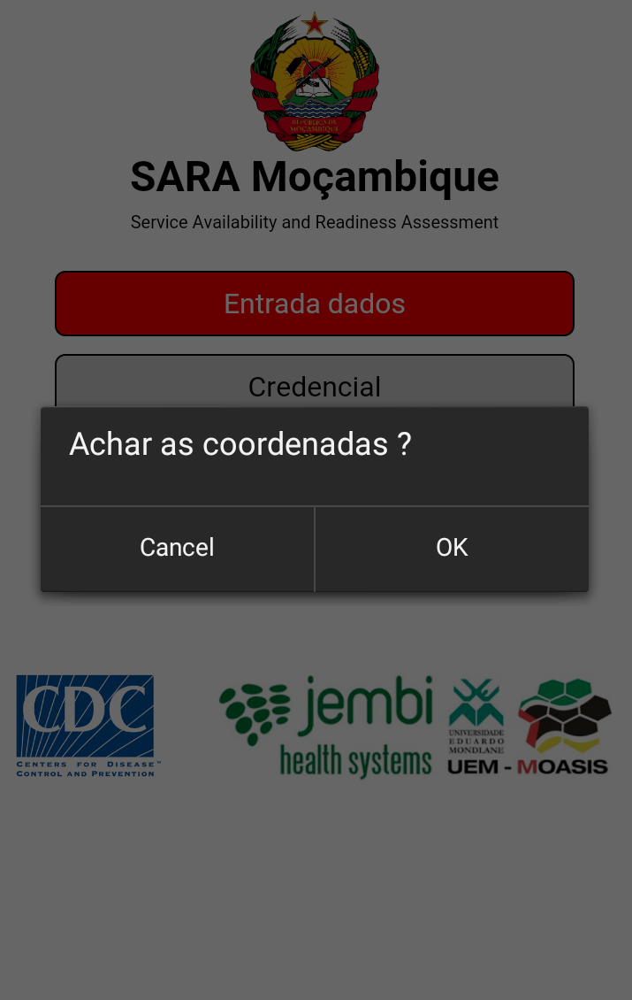
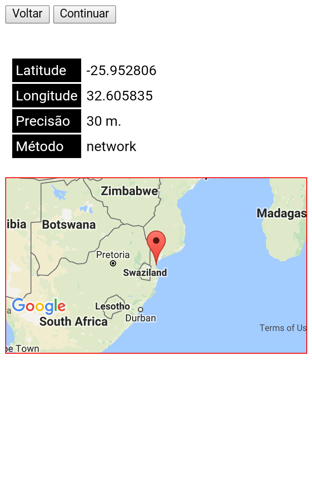
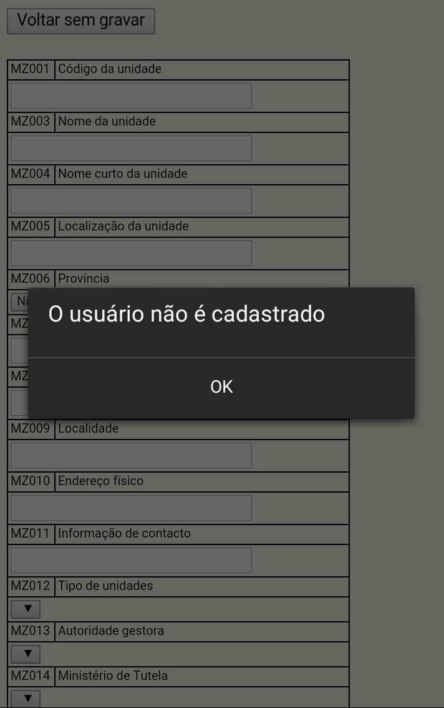
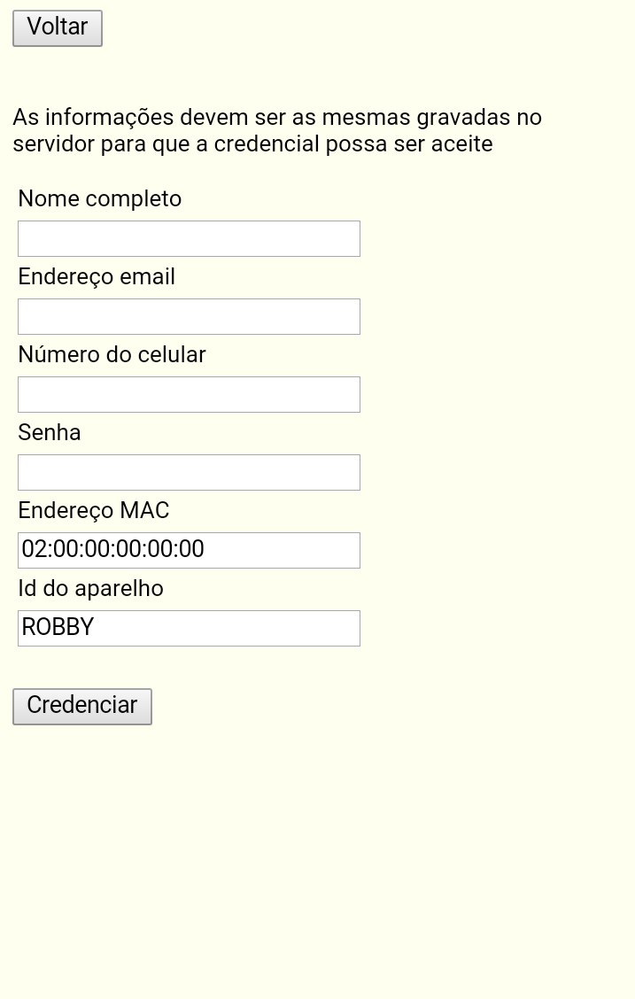
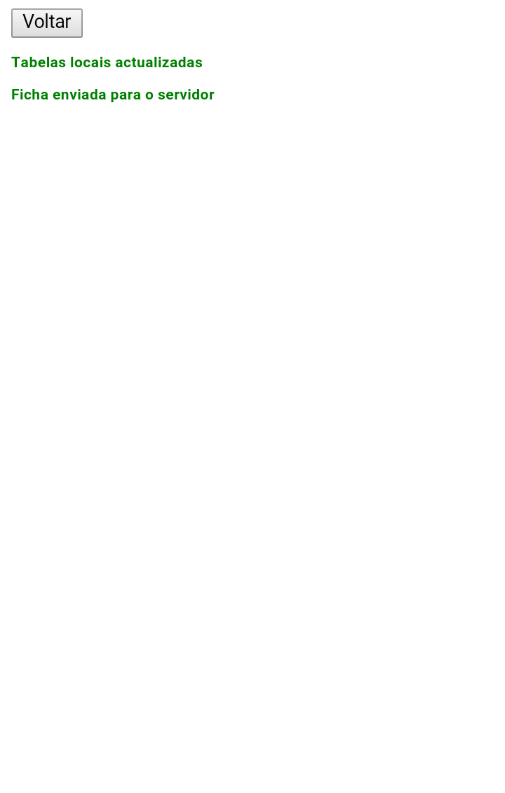

O menu foi concebido para conter o mínimo de opções com o objectivo duplo de ser simples e de dimensões físicas pequenas de maneira a poder ser usado na maioria dos dispositivos móveis baseados no sistema Android
Entrada dados

Ao escolher o item "Entrada dados", aparece uma janela com a pergunta "Achar as coordenadas ?". Responder "Sim" se pretende-se utilizar a função GPS presente na maioria dos dispositivos móveis e obter automaticamente as coordenadas. Responder "Não" se já achou as coordenadas com outro dispositivo e deseja usa-las para a sucessiva entrada de dados. O sistema de coordenadas que deve ser usado é o WGS84, veja https://pt.wikipedia.org/wiki/WGS84 para informações.

Para que se possa achar as coordenadas o dispositivo móvel deve possuir as funções GPS seja na parte hardware que no software. Isto é não é suficiente a presença do hardware específico, mas também devem ser ativadas as funções software específicas.
O dispositivo móvel dispõe de dois canais para achar as coordenadas: o canal de rede e a ligação direta ao satélite GPS. O dispositivo irá escolher autonomamente e automaticamente o canal mais rápido. Achar as coordenadas pode levar alguns minutos, é preciso ter paciencia. Se o processo demorar mais de 5 minutos, então a função não é disponível temporariamente ou não está ativada ou não existe.
Após ter achado as coordenadas, a tela mostra os valores de latitude, longitude, a precisão em metros e o método de aquisição: network ou GPS.
Os botões acima permitem duas escolhas: voltar, isto é voltar ao menu principal ou continuar, isto é colocar os valores de latitude e longitude no formulário SARA.
A tela que mostra as coordenadas, mostra também a localização no mapa das coordenadas. É possível avaliar a precisão das coordenadas através das funções "touch" típicas dos dispositivos móveis. O movimento dos dedos na tela, permite aumentar a resolução do mapa.

As funções de segurança do App não permitem a qualquer pessoas de gravar os dados. O operador deve-se cadastrar antes de poder entrar qualquer dado no sistema.
O formulario aparece logo após a tela das coordenadas ou diretamente se o operador escolheu de não acha-las a partir do dispositivo móvel. O formulário contem os campos indicado pelo manual da KPMG. Se o operador for previamente cadastrado então pode gravar os dados. Estes dados são gravados no interior do dispositivo móvel, ainda não vão ser enviados para o servidor central. Os dados podem ser editados em qualquer momento e modificados a partir do item "Entrada dados"do menu principal. Só depois de enviar os dados para o servidor será disponível uma nova ficha.
Credencial

O primeiro passo, antes de proceder à entrada de dados, é ativar a credencial adquirida no processo de cadastramento. O cadastramento é efectuado exteriormente à App móvel. Nesta tela é preciso colocar os mesmos dados que foram enviados no processo de cadastramento. Nota-se a presença de dois campos adicionais que permitem identificar o aparelho móvel de maneira automática.
Se os dados das credenciais serem os mesmos registados no acto de cadastramento, então o servidor irá enviar a permissão para o uso da App.
Actualiza servidor

O processo de actualização do servidor consta de duas partes separadas e autónomas:
Recepção das tabelas de referência. O servidor envia para a App todas as tabelas de auxílio para o preenchimento correto da ficha, por exemplo a lista dos ministérios, das autoridades gestoras, etc..
Envio dados. A ficha adquirida no processo de entrada de dados é enviada para o servidor central
Durante o processo de actualização o operador pode notar duas escritas de côr vermelha que informam o operador acerca da necessidade de aguardar.
Quando o processo for completado corretamente o operador será informado através das mensagens que se podem ver na figura acima. Notar a côr verde. Só neste caso o processo poderá ser considerado concluído corretamente.